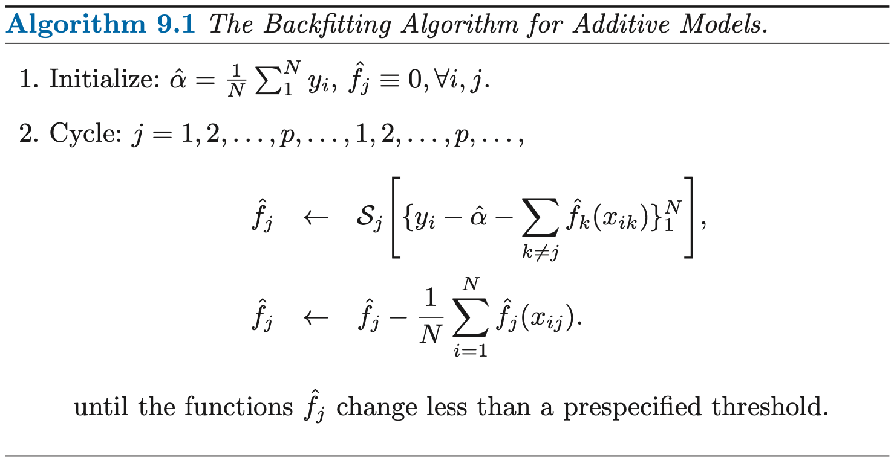
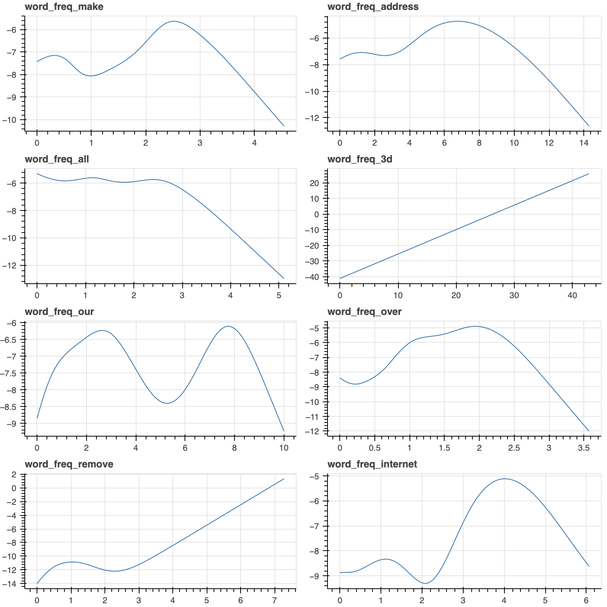

ESL 9.1: Generalized Additive Models
实际中的很多模型并非线性，传统线性模型效果并不好。本节介绍了一种更加灵活的统计模型，可以建模非线性的影响。它将模型定义为：
其中，\(X_i\) 是第 \(i\) 个特征，\(Y\) 是预测值，\(f_i\) 是第 \(i\) 个特征的 "smoother"，它可以是一个 cubic spline，也可以是一个 kernel smoother。
例如，在逻辑回归中，对于二分类问题我们假设 Y=1 的概率 \(\mu(X) = \text{Pr}(Y=1|X)\)，我们可以将 logit 函数表示为特征的 线性 组合：
在 additive model 中，我们不作线性假设，上式写为更通用的形式：
上式的每个估计函数 \(f_i\) 是基于 scatterplot smoother 的，因此可以体现 \(X_i\) 的非线性特征。
9.1.1 Fitting Additive Models
本节我们用 cubic spline 作为 scatterplot smoother 来拟合一个 additive model。这个 additive model 形式为：
其中 \(\varepsilon\) 是均值为 0 的误差项。
我们的目标是确定 \(\alpha\) 以及 \(f_j\)，为了描述非线性，我们假设 \(f_j\) 是 以每个样本点为节点的 cubic spline。
Unique Solution
如果我们不附加限制条件，常数项 \(\alpha\) 不是唯一的。因为我们可以在函数 \(f_j\) 的常熟项中任意进行加减。因此，我们增加了一条限制条件以获得 唯一解:
即限制每个函数的估计值相加为 0。此时必然有一个确定的 \(\hat{\alpha} = \text{ave} (y_i)\)。

上面算法需要注意的重点：
- \(\alpha\) 初始值为\(\hat{\alpha} = \text{ave} (y_i)\)，并保持不变
- \(f_j\) 初始化全系数为 0
- 循环的思路是不断地用 \(f_j\) 去拟合 残差，直到收敛，残差由 y 减去 其它 所有特征的预测值之和得到。
9.1.2 Example: Additive Logistic Regression
Additive model 可以应用到分类问题中。通用的 additive logistic model 的形式为：
其中, \(f_1, f_2, \dots, f_p\) 用 Newton-Raphson 法估计。
Example: Predicting Email Spam
我们分别用 logistic regression 和 additive logistic model 对垃圾邮件进行分类，以此来分析 additive model 的特点。
下面是 logistic regression 的代码：
from sklearn.linear_model import LogisticRegression
from sklearn.model_selection import KFold
for train_index, test_index in KFold(n_splits=5,shuffle=True,random_state=1).split(X):
trainX, testX = X.loc[train_index], X.loc[test_index]
trainY, testY = y.loc[train_index], y.loc[test_index]
model = LogisticRegression(random_state=0).fit(trainX, trainY)
print(f"LR accuracy: {model.score(testX, testY)}")
logistic regression 的结果为：
LR accuracy: 0.9283387622149837
LR accuracy: 0.9271739130434783
LR accuracy: 0.9119565217391304
LR accuracy: 0.9206521739130434
LR accuracy: 0.925
下面是 additive logistic model 的代码：
from pygam import LogisticGAM
for train_index, test_index in KFold(n_splits=5,shuffle=True,random_state=1).split(X):
trainX, testX = X.loc[train_index], X.loc[test_index]
trainY, testY = y.loc[train_index], y.loc[test_index]
model = LogisticGAM().fit(trainX, trainY)
print(f"GAM accuracy: {model.accuracy(testX, testY)}")
additive model 的结果为：
GAM accuracy: 0.9402823018458197
GAM accuracy: 0.9380434782608695
GAM accuracy: 0.9228260869565217
GAM accuracy: 0.9467391304347826
GAM accuracy: 0.9456521739130435
可以看出，默认参数情况下，GAM 的结果要略好于 LR 的结果。通过画出拟合出的每个特征的函数 \(f_j(X_j)\)，可以看出，很多特征都具有非线性的函数。而 additive model 的一大优势就是能够 capture non-linear effects.

绘图所用代码：
# Plot to notebook
from bokeh.io import output_notebook
output_notebook()
from bokeh.plotting import figure, show
from bokeh import layouts
def plot_features(gam_model, feature_names):
# exclude the intercept
feature_count = len(gam_model.terms) - 1
figs = []
for i in range(feature_count):
xx = gam_model.generate_X_grid(term=i)[:, i]
yy = gam_model.partial_dependence(term=i)
fig = figure(title=feature_names[i])
fig.line(x=xx, y=yy)
figs.append(fig)
show(layouts.gridplot(figs, ncols=2, width=400, height=200))